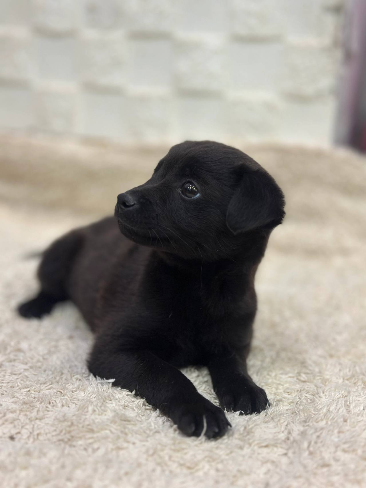
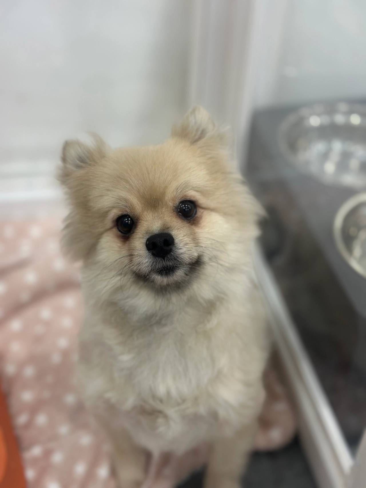
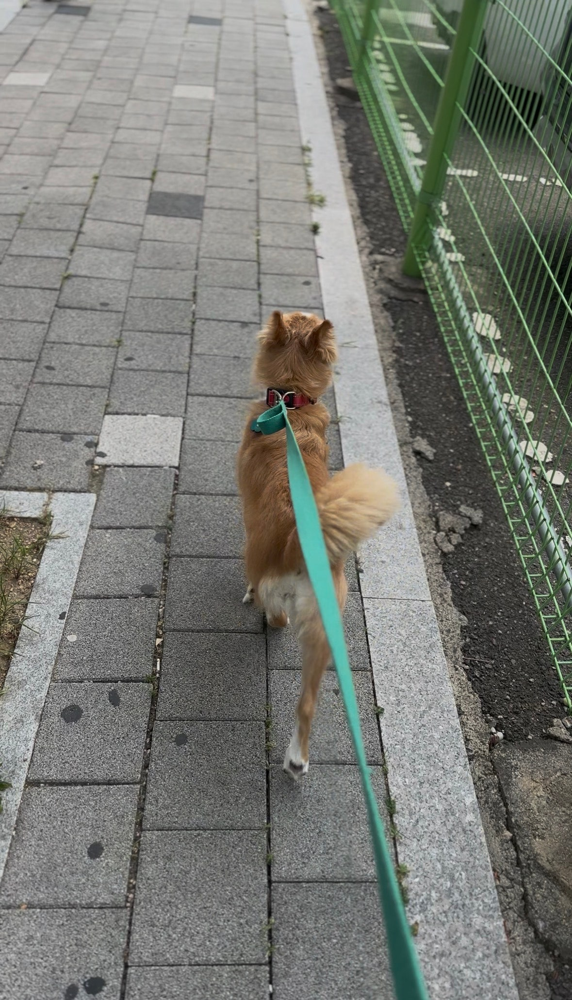

임신, 출산
출산 전후로돌보기 어렵거나아기와 함께 두기불안할 때
LOCAL GUIDE
가족의 알레르기나 주거 환경의 급변으로 피치 못하게 남해강아지입양보내기 정보를 찾는 반려인이 늘고 있습니다. 아이가 상처받지 않고 안전한 환경에서 생활할 수 있도록 객관적인 조건을 따져보아야 합니다. 현재 보호실 정원이 꽉 찬 시기에는 입소가 제한되므로 무작정 이동하기 전에 잔여 공간을 반드시 확인해야 합니다.
REHOMING
개인적인 사정으로 반려견과 더 이상 함께하기 어려운 상황일 때 체계적인 절차를 거쳐 아이를 입소시키고 무료 분양으로 보금자리를 이어 줍니다. 전화 상담(0505-707-0401)을 통해 현재 상황을 파악하며 무리한 수용 대신 여건에 맞춰 신중하게 돌봄을 시작합니다.
갑작스러운 환경 변화 속에서도 아이가 평온함을 잃지 않도록 세심하게 보살피며 다음 행보를 준비합니다. 이는 책임 있는 보호 속에서 아이에게 새로운 가족을 만날 기회를 열어 주는 과정입니다.
새로운 가족을 찾아 주는 일은아이에게 건넬 수 있는마지막 선물입니다.
출산 전후로돌보기 어렵거나아기와 함께 두기불안할 때

함께 살다동물 알러지가 나타나생활이 어려워졌을 때

해외로 데려갈 수 없거나이사한 집에서함께하기 어려울 때군 입대와 오랜 부재도같은 경우에 가깝습니다.

보호자가 아프거나연로해졌을 때아이도 나이가 들어집에서 돌보기 어려울 때
상담부터 입양 공고까지, 순서는 같습니다.

유선 상담을 통해 나이, 지역, 질병 유무와 특이 상황을 확인합니다. 센터 내부 공간을 종합적으로 살펴본 뒤 1차 입소 가능 여부를 결정합니다.

직접 센터로 방문하시거나 이동 지원 일정을 조율하여 선택합니다. 전국 어디든 전담 인력이 무상으로 픽업하여 이동을 돕습니다.

제반 확인 사항과 규정된 비용 조항을 면밀하게 검토합니다. 안내 내용을 충분히 숙지한 후 정식 입소 동의서를 작성합니다.

건강 상태와 함께 대형견, 소형견, 노령견 여부를 다각도로 살핍니다. 확인된 상태에 맞춰 아이가 안전하게 머물 전용 공간을 정합니다.

안정적인 생활 속에서 아이의 사진과 영상을 정성껏 촬영합니다. 새로운 인연을 맞이할 수 있도록 사전 자료를 차분히 정리합니다.

공식적인 입양 공고를 등록하여 아이의 다음 여정을 이끕니다. 적합한 보금자리를 찾아 새로운 가족과 따뜻하게 연결됩니다.
개별 일과와 성향 점검을 거쳐 생활 적응을 준비하고 있는 강아지 현황입니다.
양육 환경과 반려견의 성향이 부합하는지 점검하는 순서입니다.
주거 형태, 가족 구성원의 동의 여부, 돌봄 시간 등을 유선 상담을 통해 점검합니다.
보호소에 방문하여 개체의 건강 이력과 행동 특성을 확인하고 직접 대면 시간을 가집니다.
지속 양육에 관한 세부 항목을 확인하고 확인 서류를 작성한 뒤 가정을 이룹니다.
산책하고, 밥 먹고, 미용하는 보호소의 하루입니다. 사진을 누르면 그 이야기를 볼 수 있어요.
안내
아파트나 빌라가 밀집한 남해 주거 환경에서는 이웃 간의 마찰이나 층간 소음 문제로 인해 위탁 문의가 종종 발생합니다.
어려운 고민 끝에 입소를 결심하셨다면 우선 0505-707-0401 유선 문의로 남해강아지입양보내기 세부 규정을 차근차근 확인해 보세요. 현장 공간이 꽉 차 있을 때는 입소가 거절될 수 있으므로 사전에 유선 조율을 거치는 절차가 안전합니다. 상담을 통해 서류 구비 요령과 아이의 입소 적합성을 함께 논의해 드립니다.
급한 사정이 생겼다고 해서 사전 연락 없이 방문할 경우 당일 입소가 거절되거나 장시간 대기해야 할 수 있습니다. 모든 보호 시설은 법적 규정과 동물 복지를 준수하기 위해 최대 수용 가능 개체 수를 정해 두고 있습니다.
잔여실이 없을 때는 무리하게 개체를 들이지 않고 안전한 공실이 발생할 때까지 대기 일정을 조율합니다. 남해 남해강아지입양보내기 이용 전 반드시 유선망을 통해 실시간 공실 상황을 먼저 체크하시기 바랍니다.
새로운 환경을 찾는 과정에서 강아지의 문제 행동을 숨기는 것은 오히려 재입양을 어렵게 만드는 원인이 됩니다. 분리불안 증세, 특정 자극에 대한 헛짖음, 낯선 사람이나 물건에 대한 입질 성향 등은 가감 없이 투명하게 공유되어야 합니다.
아이의 성향을 정확히 파악해야 시설 내에서도 적절한 교정 교육을 병행할 수 있고, 이를 감당할 수 있는 준비된 가정으로 연계할 수 있습니다. 남해강아지입양보내기 접수 단계에서 작성하는 행동 평가표는 아이를 평가절하하기 위함이 아니라 진정한 행복을 찾아주기 위한 필수 데이터입니다.
입소 당일 차질 없는 행정 처리를 위해 보호자는 정해진 필수 서류를 사전에 구비해 주셔야 합니다. 마이크로칩 번호가 기재된 동물등록증, 동물병원 접종 및 중성화 확인서가 대표적인 지참 항목입니다.
새로운 환경에서 느낄 두려움을 덜어주기 위해 보호자의 냄새가 밴 담요, 즐겨 쓰던 방석과 장난감을 챙겨주시는 것이 좋습니다. 남해강아지입양보내기 과정에서 이러한 준비는 아이가 낯선 장소에 빠르게 안착할 수 있는 든든한 버팀목이 됩니다.
마음이 급한 나머지 사전 연락 없이 아이를 데리고 무작정 찾아왔다가 자리가 없어 발길을 돌려야 했던 사례도 있습니다. 보호 시설은 무한정 아이들을 밀어 넣는 수용소가 아니며, 철저한 정원 관리를 통해 위생과 건강을 유지합니다.
새로 들어오는 아이가 머물 독립 검역실이 마련되지 않은 상태에서 무리하게 입소를 진행할 수는 없습니다. 남해 남해강아지입양보내기 센터를 찾으실 때는 사전에 잔여 공실을 유선으로 조회하시고 방문 일정을 확정해 주셔야 헛걸음을 막을 수 있습니다.
소유권 이전을 위한 동물등록증 또는 마이크로칩 등록 번호가 반드시 확인되어야 합법적인 행정 처리가 가능합니다. 또한 지금까지 진행된 종합백신, 광견병, 켄넬코프 등 예방접종 수첩과 중성화 수술 여부 증빙 서류가 요구됩니다.
아이의 정서적 안정을 위해 평소 애착을 보이던 장난감이나 담요, 급여하던 사료 소량을 지참하시는 것이 권장됩니다. 남해강아지입양보내기 진행 시 이러한 서류와 물품이 완비되어 있어야 다음 입양 가정을 매칭할 때도 객관적인 신뢰를 확보할 수 있습니다.
일부 비양심적인 곳에서는 온라인상에 외모가 뛰어난 사진만을 등록하고 선입금이나 비정상적인 예약금을 갈취하기도 합니다. 생명을 다루는 과정에서 실물 대면과 성향 면담 없는 금전 요구는 심각한 문제를 야기합니다.
건전한 기관은 사전 예약금을 강요하지 않으며, 입양 희망자가 직접 방문하여 아이와 호흡을 맞추는 과정을 필수로 둡니다. 남해강아지입양보내기 후에도 이러한 원칙이 철저히 지켜지는지 꼼꼼히 확인하셔야 아이의 안전이 보장됩니다.
당일 무조건적인 입소가 가능한 곳은 아이들의 적정 수용 두수를 초과하여 열악한 환경으로 이어질 위험이 큽니다. 각 생활실의 쾌적함을 유지하고 격리 적응실을 배정하기 위해 시설의 잔여 자리를 실시간으로 확인하는 과정이 선행되어야 합니다.
자리가 부족할 경우 무리하게 입소를 강행하기보다는 일정을 조율하여 순차적인 대기 접수를 진행하게 됩니다. 남해 남해강아지입양보내기 이용을 원하실 때는 유선망을 통해 현재 공실 상황을 먼저 문의하시고 방문 일정을 확정하는 것이 현명합니다.
보호소 입소에 필요한 비용은 정해진 단일 금액으로 일괄 청구되지 않으며, 세부적인 관리 난이도에 따라 차등 산정됩니다. 어린 개체인지, 노령견인지, 추가 접종이나 지속적인 치료가 필요한 상태인지에 따라 보호 계획이 달라지기 때문입니다.
따라서 초기 상담 단계에서 아이의 건강 기록과 문제 행동 여부를 종합하여 명확한 소요 비용을 산출해 드립니다. 남해강아지입양보내기 진행 시 0원 무료 입소 등의 허위 과장 안내에 현혹되지 마시고 합리적인 근거를 갖춘 공식 안내를 확인하셔야 합니다.
전국 대표 번호를 통한 1차 비대면 상담
유선상으로 아이의 품종, 연령, 예방접종 상태, 잔여 공간 여부를 종합적으로 확인하고 입소 가능성을 타진합니다.
개별 공간 격리 배정 및 적응 관리
지정된 개별실로 입소하여 초기 스트레스 완화를 위한 안정 기간을 거치며 맞춤 식단을 급여합니다.
보호 위탁 계약서 작성 및 권한 인계
법적 소유권 이전과 관련된 서류에 상호 날인하고 사후 관리 및 입양 심사 원칙에 대한 규정을 숙지합니다.
남해강아지입양보내기 상담 전화는 무엇인가요?입소 상담 전화는 0505-707-0401입니다. 남해이라고 해서 바로 맡길 수 있는 것은 아니고, 자리와 아이 상태를 먼저 확인합니다.
남해에 따로 적힌 보호소 주소가 있나요?남해강아지입양보내기 페이지는 남해 상담 안내입니다. 이 글에 없는 주소를 그 지역 지점이라고 안내하지 않습니다.
전화하면 바로 진행되나요?자리가 없거나 생활이 맞지 않으면 바로 진행되지 않습니다. 전화로 확인한 뒤 만남을 정합니다.
직접 방문이 힘든 경우 자택 픽업 서비스 신청이 되나요?안전한 운송을 위한 전용 이동 차량 지원이 가능한지 여부와 이동 반경에 따른 세부 일정은 유선 상담 시 별도로 협의해야 합니다.
입소 절차를 밟으려면 비용은 어떻게 산정되고 안내받나요?아이의 품종, 연령, 만성 질환 유무, 건강 상태 및 교정 필요성에 따라 돌봄 비용이 상이하며 유선 면담을 통해 책정 기준을 투명하게 고지합니다.
외모나 사진만 보고 위탁 및 보호 여부를 판단해도 괜찮은가요?사진만으로는 아이의 기질과 건강 상태를 온전히 파악할 수 없으므로 상세한 생활 기록 인계와 직접 대면 확인이 원칙입니다.
입소한 이후 아이의 새로운 입양 공고는 어떻게 진행되나요?적응 기간을 거쳐 성격이 파악되면 보호소 공식 채널을 통해 개체 프로필을 게시하고 엄격한 입양 희망자 심사에 돌입합니다.






CONTACT
입양과 입소, 전국 어디서든 전화로 상담합니다.
전국 입소문의